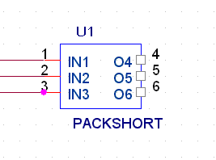
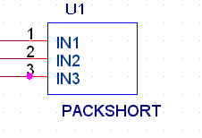

You netlist a design after you place parts, update part references, and check for design rule violations.
You can choose from more than 30 industry-recognized
netlist formats. Your choice of netlist format is
determined by the application that you intend to use.
The EDIF 2 0 0, VHDL, PSpice and Verilog netlist formats
generate true hierarchical netlists. When a design is
netlisted with one of these formats, the instance property
values on nets and parts are used. All other netlist
formats in Capture produce flat netlists, and use
occurrence property values.
If you have translated a design with multiple schematic
folders, use Annotate (and check for duplicate references)
before netlisting.
|
|
|
Net name resolution
When you are creating schematic pages, you can assign a variety of aliases to signals that are ultimately connected, but the netlist needs exactly one name for each net.
If Create Netlist encounters multiple names for a single net, higher priority aliases override lower-priority aliases. Priority is determined by the source of the name, ranked as follows:
|
Lowest: |
System-generated names |
|
Highest: |
Named nets |
Any remaining conflicts among netnames are resolved according to the following rules:
- The net name closest to the "root" of the project takes precedence over those further away.
- If the net is a bus, the net alias assigned to the greatest number of bus members has the highest priority.
-
Among net names of equal precedence, priority follows an
alphabetical order.
As you can see, a net may change names several times as Create Netlist works. For example, the net may start with an alias of Battery on one page, be renamed ToBattery from an off-page connector, change again to become DC as a port is encountered, and finally change to BatteryBackup when Create Netlist finds a named net closer to the root schematic folder. Once the netlist is created, you can select any piece of the net anywhere in the design and see the net's name as it is recorded in the netlist (BatteryBackup), not as it appears at that particular location.
PACK_SHORT Property
Capture includes a PACK_SHORT property that lets you map
one logical pin to two or more physical pins. Take the
example of an SMA connector. It has one signal pin and 4
shielding pins connected to Ground. The standard Capture
symbol has only one visible Ground pin. So what is required
is to short all the 4 GND pins in the Allegro netlist with
the net that is connected to the visible GND pin.
To do this, you can either add the other three Ground pins
as NC or with a different net name depending on whether
they have been added as invisible or visible with zero stub
length.
Alternatively, you can use the PACK_SHORT property in
Capture to hide the PACK_SHORT pins or make them visible
with zero length pin stub.
Using this property, multiple groups of pins, each group
having two or more pins, can be shorted.
|
|
You cannot use the PACK_SHORT property to short invisible pins. Only visible pins can be part of the PACK_SHORT property. |
Syntax:
PACK_SHORT=(<group1>)(<group2>)[<group3>]
Where: <group> indicates (logicPin1, logicPin2 ...
[logicPinN])
Example
Consider the assignment, PACK_SHORT = (A1, B1, Y1) (A2, B2)
shorts together. The nets attached to logic pins A1, B1,
and Y1 are shorted with each other and the nets attached to
pins A2 and B2 are shorted with each other.
The PACK_SHORT property is implemented so you can either
hide the pins to be shorted by checking the ignore checkbox
in or you can make them zero length
pins and show them as unconnected as illustrated
below.
Method 1:

The above part has O4, O5 and O6 added as PACK_SHORT pins
(IN1,O4,O5,O6) that will inherit the pin IN1 net set as
zero-length but their stub will still be visible. If you
instantiate this part and generate an Allegro netlist, IN1,
O4, O5 and O6 will inherit the same net.
If IN1 is left unconnected, all PACK_SHORT pins will be
marked as NC.
Method 2:

If you have chosen to hide the pins to be shorted by
checking the Ignore checkbox in Package
properties, and also defined those pins as part of the
PACK_SHORT property, the hidden pins will be written to the
netlist. Also, its net will be inherited from the master
pin that is visible on the symbol instance.
You can also use the PACK_SHORT property in conjunction with the PSpiceOnly property to specify shorting for nets attached to the instance. If a PACK_SHORT device is connected with two different nets across the PACK_SHORT pins, the net connected to the first pin defined in PACK_SHORT property will be written to the netlist.
Create Netlist dialog box tabs
OrCAD provides a number of netlist format files. You choose a netlist format in the Create Netlist dialog box.
|
|
The Capture netlist format files are not the same as those shipped with SDT 386+. It is important that you keep both versions of the netlist format files installed if you plan on using both Capture and SDT 386+. Capture netlist formats files are supplied as .DLL files, while SDT netlist format files are provided as .EXE files. |
In this section:
- Creating a Netlist
- Creating a Flat Netlist
- Working with Hierarchical Netlists
- Specifying an Alternate Netlist Template